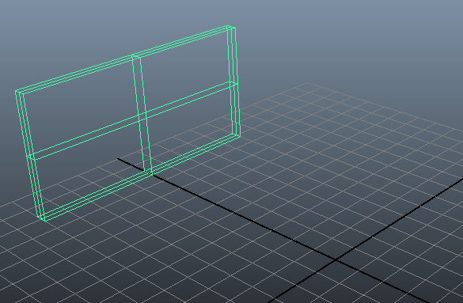
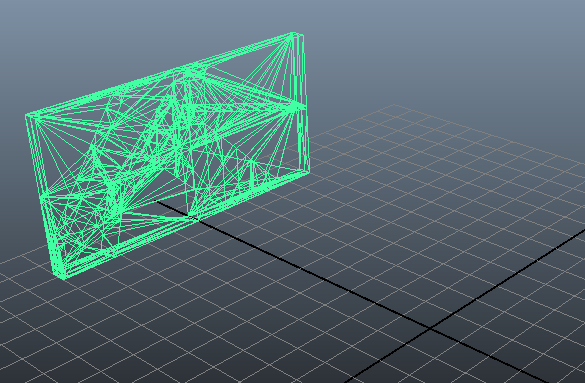
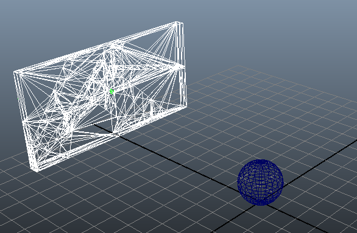
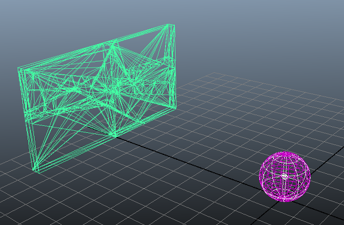
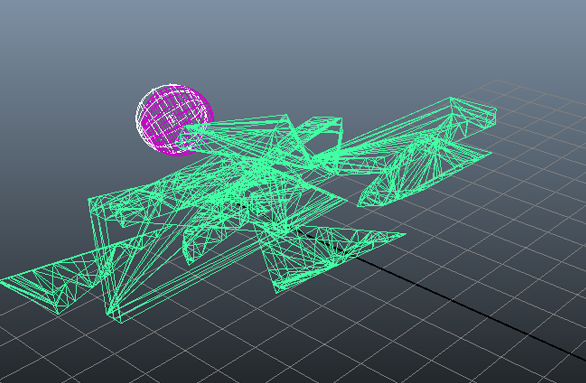

在新的 Maya 场景中，将“时间滑块”(Time Slider)持续时间设置为 100 帧，并确保将其设置为在第 1 帧播放。
- 创建一个多边形立方体作为墙。选择“创建 > 多边形基本体 > 立方体”(Create > Polygon Primitives > Cube) >
 。
。 - 设定：
- “宽度”(Width)设置为 0.5。
- “高度”(Height)为 5
- “深度”(Depth)为 10
然后单击“创建”(Create)。
- 在“属性编辑器”(Attribute Editor)或“通道盒”(Channel Box)中，当立方体仍处于选定状态时，将“变换属性 > 平移”(Transform Attributes > Translate)值设置为：
- -10.00
- 2.5
- 0.0
这样，就在栅格后端确定了墙的位置。 - 选择“编辑 > 按类型删除 > 历史”(Edit > Delete by Type > History)。
- 使用“破碎”(Shatter)工具来设置墙的断裂。请参见创建破碎。 注： 建议使用“实体破碎”(Solid Shatter)。
- 创建炮弹轰击您的墙。选择“创建 > 多边形基本体 > 球体”(Create > Polygon Primitives > Sphere)。
- 在“属性编辑器”(Attribute Editor)或“通道盒”(Channel Box)中，选中球体后，将“变换属性 > 平移”(Transform Attributes > Translate) Y 轴的值设置为 1.0。这样可将其设定在地平面上方。
- 选择墙。（若要避免选择其中一个碎片，请选择“窗口 > 大纲视图”(Window > Outliner)，然后选择“SolidShatter1”）。
- 选择“Bullet > 创建刚体集 > 从定对象创建刚体”(Bullet > Create Rigid Sets > Create Rigid Set from Selected Objects)。
- 在 solidShatter1SetInitalState 节点的“碰撞属性”(Collision Attributes)部分中，将“碰撞对象形状类型”(Collider Shape Type)设置为“壳线”(Hull)。（如果选择任何其他非“壳线”(Hull)的图形类型，播放模拟时碎片会相交和炸开）。
- 确保设置刚体墙形状的“初始条件”(Initial Conditions)时，关闭“从不睡眠”(Never Sleeps)设置，且打开“开始时睡眠”(Initially Sleeping)设置。否则您按下“播放”(Play)时墙会自毁。
- 确保将所有的“初始速度”(Initial Velocity)设置为 0。
- 单击“应用并关闭”(Apply and Close)。 
- 选择球体，然后选择“Bullet > 创建主动刚体”(Bullet > Create Active Rigid Body) > 。
- 在球体的“碰撞对象特性”(Collider Properties)下，将“碰撞对象形状类型”(Collider Shape Type)设置为“球体”(Sphere)。
- 禁用“开始时睡眠”(Initially Sleeping)，并将球体的“初始速度”(Initial Velocity)设置为：
- -10.0
- 8.0
- 0.0
 - 在“大纲视图”(Outliner)中选择 bullerSolver1，然后在 bulletSolverShape 节点的“解算器属性”(Solver Properties)区域中打开“地平面”(Ground Plane)。
- 单击“播放”(Play)查看模拟。 
碎片注释
- 在将刚体墙对象的中心枢轴用作对象的质心时，不一定会得到最佳效果。如果是这种情况，请调整旋转枢轴，然后单击“重新适配”(Refit)。
使用“属性编辑器 > 解算器特性”(Attribute Editor > Solver Properties)部分中的“属性编辑器 > 调试绘制”(Attribute Editor > Debug Draw)设置查看该刚体碰撞形状是否与源网格紧密适配及偏移是否正确。使用刚体“自动适配”(Auto Fit)属性自动选择正确的偏移。
- 会将一个 0.04 的碰撞边界自动添加到从源网格创建的碰撞形状。这意味着，默认情况下，完全对齐的片会在开始帧自动发生碰撞。使用“开始时睡眠”(Initially Sleeping)设置或略微压缩输入网格可以补偿此边界。
- 如果在某个轴上更改壳线以外的其他任何碰撞对象形状的“质心”(Center of Mass)属性，则将变换碰撞对象形状基本体。若要抵消此问题，请在“碰撞对象形状偏移”(Collider Shape Offset)属性中的“碰撞对象特性”(Collider Properties)（关闭“自动适配”(Auto Fit)时可以访问）下在相同轴上添加相反的偏移。